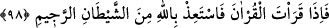
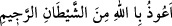

davranmak, Allah’ın vâdi gelinceye kadar tâatin meşakkatlerine sabretmektir.
Hâfız der ki:
Ey Hâfız, gece gündüz çetinliğe sabreyle
Nihâyet bir gün murâdına nâil olursun
98. Kur’an okuduğun zaman o kovulmuş şeytandan Allah’a sığın!
“Kur’an okuduğun” okumak istediğin “zaman o kovulmuş” rahmetten kovulan ve
lânetle taşlanan, hayırdan uzak olan “şeytandan” yâni kıraat sırasında sana vesvese
vermemesi için onun vesveselerinden ve şaşırtmalarından “Allah’a sığın!” Allah
Teâlâ’dan seni himâye etmesini ve korumasını niyaz et. Çünkü her mahlûkun perçemi
(tasarrufu) O’nun elindedir. Ya da “
(Allah’ın rahmetinden
kovulmuş şeytandan Allah’a sığınırım.)” Bu şekilde istiâzede bulunmak, istiâze lafızları
konusunda vârid olan on dört rivâyet içinden tercih edilendir. Nitekim Tefsîr-i Hâce
Parsâ’da (k.s.) böyle geçmektedir.
Âyette sebebe müsebbebin ismi verilmek sûretiyle Kur’an okuma isteği ‘Kur’an
okumak’ olarak ifâde edilmiştir. Bu, maksadın okumaya bitişik olan irâde/istek olduğunu
bildirmek içindir.
99. Gerçek şu ki: İman edip de yalnız Rablerine tevekkül edenler üzerinde onun
(şeytanın) bir hâkimiyeti yoktur.
“Gerçek şu ki: İman edip de yalnız Rablerine tevekkül edenler” Allah’ın dostları
“üzerinde onun” şeytanın “bir hâkimiyeti” tasallutu ve velâyeti “yoktur.” Çünkü onun
vesvesesi onlara tesir etmez. Kur’an okuyan kimsenin Allah Teâlâ’dan kendisini
şeytanın vesveselerinden korumasını istemesi emredilince bundan şeytanın bütün
âdemoğullarını yoldan çıkarma konusunda tasallutunun ve velâyetinin olduğu vehmi
ortaya çıkmıştır. Onun için Allah Teâlâ onun tevekkül ehli mü’minlere tasallutunun
olmadığını beyan etmiştir. Bu âyet, istiâze emrinin sebebini ortaya koymaktadır. Sâdece
sözün fayda etmeyeceğine, bilakis şeytanın kendisine yol bulamaması için mutlaka
îmanla tevekkülü birleştirmek gerektiğine işârettir.